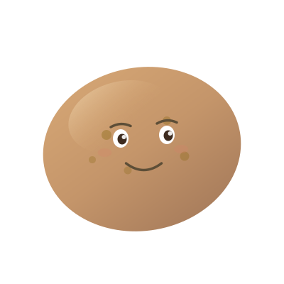

Block distracting apps and go full potato. We're here to help.
Free iOS App · No Account RequiredGetting Started
When you first open Potato Mode, tap Enable Screen Time Access. iOS will ask you to confirm — this is required to block apps. No data leaves your device.
Tap the app picker to choose which apps you want to block. You can select individual apps or entire categories like Social or Entertainment.
Use Couch Mode for instant blocking, Schedules for recurring time windows, or Usage Limits to set a daily time budget per app group.
Frequently Asked Questions
Can't find an answer above? Send us an email and we'll get back to you as soon as we can.
✉ [email protected]Potato Mode is completely free with no ads. If it's helped you reclaim your time, consider buying us a coffee — it helps keep the potato fed.
☕ Buy me a coffee